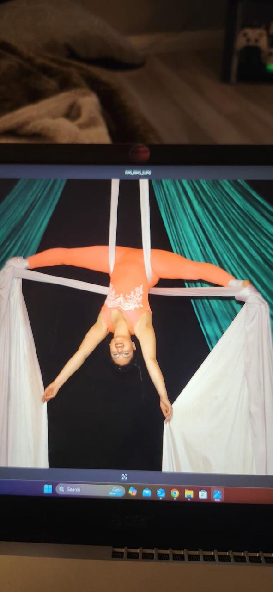
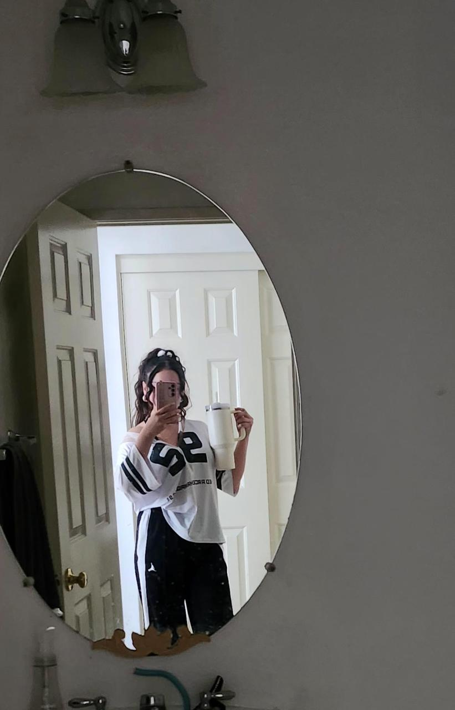
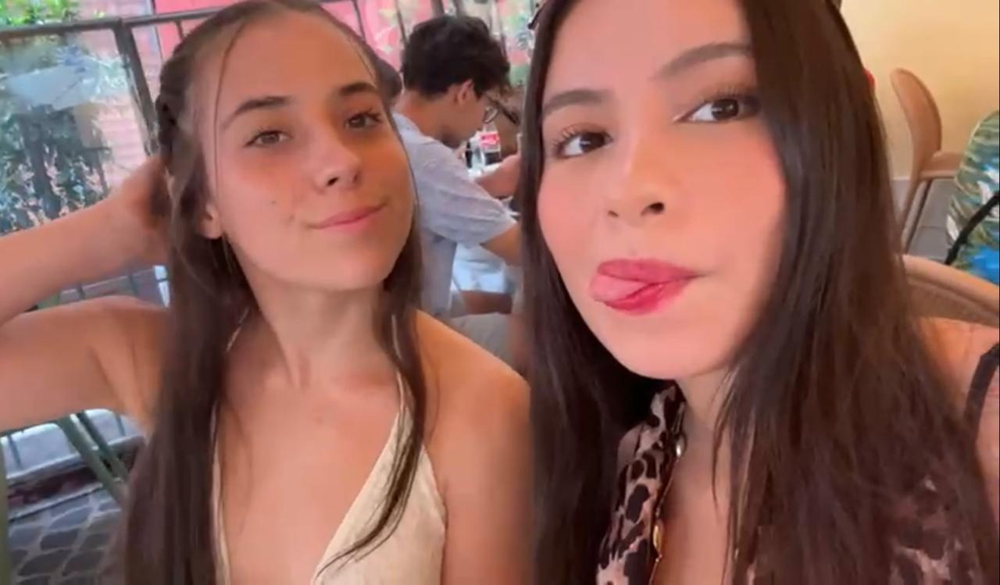
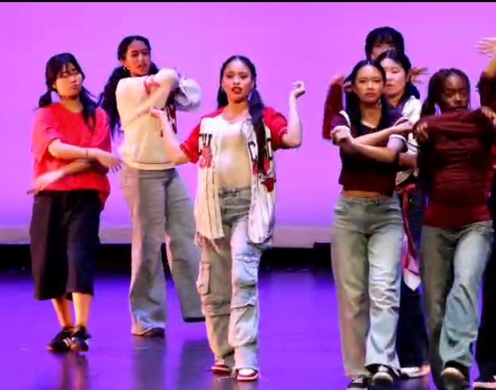
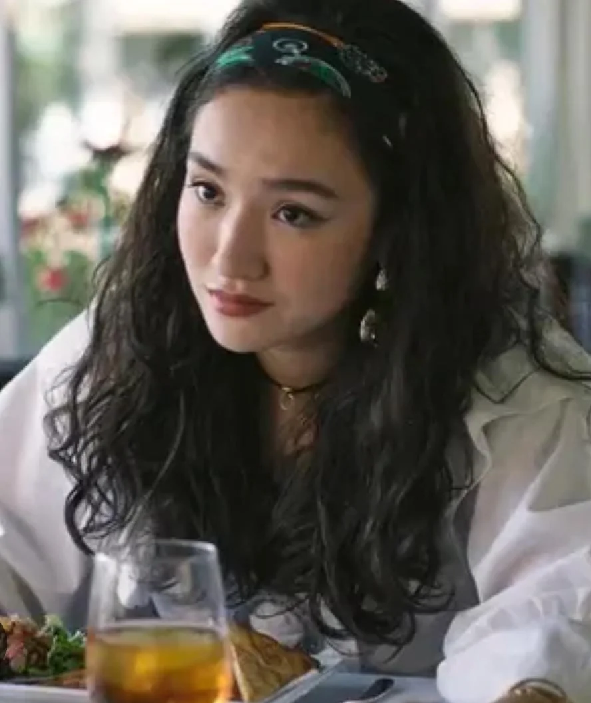
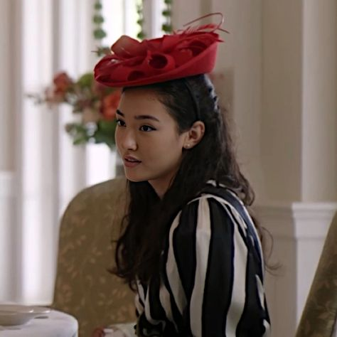

Empece este proyecto seis meses antes de tu graduacion, porque en ese momento
apenas me habian enseñado algunas cosas sobre programacion y sabia que me enseñarian mas
duarante todo mi ultimo semestre.
tenia muchisimas ganas de ir a tu graduacion,
pero tambien sabia muy bien que existia las posibilidad de no poder esta contigo
en un momento tan importante. asi que decidi hacer algo especial y significativo
que puediera darte
✨ mi proyecto
cuando empecé esta página, apenas llevaba unas cinco clases de HTML (un lenguaje relativamente sencillo),
y ya me sentía como todo un programador experto,
aunque ese sentimiento no duró mucho.
pronto llegaron los errores:
no poder subir un archivo mp3, una imagen cortada, un efecto de texto que no funcionaba,
o pasar horas buscando una llave mal cerrada entre más de 600 líneas de código.
fueron experiencias que me llevaron al límite más de una vez.
hubo momentos en los que pensé en abandonar el proyecto, o incluso en no mandártelo nunca, especialmente en los últimos meses.
pero si estás viendo esto. creo que no fue asi. dicho eso, espero que te guste.
🌙 ¿Quién es Luna?
para mi luna es una persona demasiado compleja para poder describir, apesar de eso lo intentare.
para mi luna es la niña mas caotica pero tambien la mas divertida, es capaz de reir durante horas contigo
pero tambien sorprenderte con pensemientos profundos y una personalidad llena de matices, en palabras de
shrek es parecida a una cebolla con muchas capas
📸 que es luna




luna es una persona multifacética a la que he podido acompañar a lo largo de su desarrollo, y si de algo me di cuenta en ese tiempo, es que su vida está muy lejos de ser una vida perfecta. ha sido una vida llena de retos que hasta el momento sigue arrojando desafíos.
porque crecer no solo es cambiar, yo diría que crecer es más bien ponerse un par de huevos u ovarios en este caso, y salir a afrontar la vida.
y es ahí donde veo a luna, pues en el tiempo que he pasado con ella he sido capaz de ver su determinación. en momentos donde cualquiera pensaría en rendirse y caer abatido ante la magnitud de un problema, ella seguiría.
y no porque sea más fácil para ella, sino porque su voluntad es su cualidad más fuerte.
la vi exigirse en cada presentación, en cada examen y en cada entrenamiento, y también la vi brillar en el escenario o volando en las telas.
y en ese momento que volaba sobre las telas no podria pensar en otra cosa que no fuera la admiracion que tengo por ella
porque que nunca conocí a alguien con esa determinación.
💌 tsitp
recuerdas a sheyla? recuerdo cuando la primera vez que vimos tsitp haberte dicho que si tu
fueras un personaje de la serie serias 100% sheyla.
pues sheyla era super cool madura y sus outfits eran los mas increibles
definitivamente y por eso pensaba que serias ella pero pensandolo bien aunque es verdad creo que
hay un personaje que te representa mejor


💌 taylor
y ¿porque taylor?bueno en la serie taylor tiene una personalidad fuerte a veces puede parecer dramatica pero es mas ella
actuando desde la emocion y la lealtad, taylor es muy protectora especialmente con belly le gusta divertirse y vivir la vida
intensamente.
aveces toma decisiones impulsivas y caoticas pero tambien tiene momentos sensibles y maduros a veces tiene
inseguridades que intenta ocultar con su confianza aplastante y puede pasar de bromear a ponerse seria mmuy rapido
💌 Gracias
gracias por ser una parte tan importante de mi vida durante todo este tiempo.
por confiarme las cosas buenas asi como las malas, por compartir momentos difíciles y también los felices.
gracias porque, incluso inconcientemente me ayudabas más de lo que te dabas cuenta.
y sobre todo, gracias por hacer de esta etapa de mi vida mucha mas feliz.
🎓 Felicidades, Luna
sé que hubo momentos difíciles, pues viví una buena parte de ellos junto a ti. sé que hubo días de estrés y de cansancio, días que se sentían como si tú hubieras dado a luz a Ángela Aguilar.
sé que algunas personas fueron malas contigo y al final se fueron, pero también sé que gracias a eso llegaron otras con las que viviste cosas increíbles y que amas mucho, personas con las que puedes salir y ser tú misma.
sé que hubo momentos en los que no aguantabas un solo día más lejos de tu familia y poco faltó para que compraras el primer vuelo a México.
aun así, sé algo más: sé que estabas llena de determinación, determinación de lograr tus sueños y de llegar al lugar que quieres. sé que muchas cosas no salieron como tenían que salir y tal vez no siempre con la frente en alto, pero yo sé que nunca dejaste de avanzar hacia donde hoy te encuentras.
yo mejor que nadie sé todo lo que has hecho para llegar a lo que eres ahora, así como también sé todo lo que has dejado de hacer por ello. sé que te falta camino por recorrer, pero también sé que si cruzas ese camino con la determinación y valentía con la que lo has hecho hasta ahora, no habrá nada que pueda detenerte.
por último, no me queda más que decirte que no podría estar más orgulloso de ti, de todo lo que has logrado y, en especial, de la mujer en la que te has convertido.